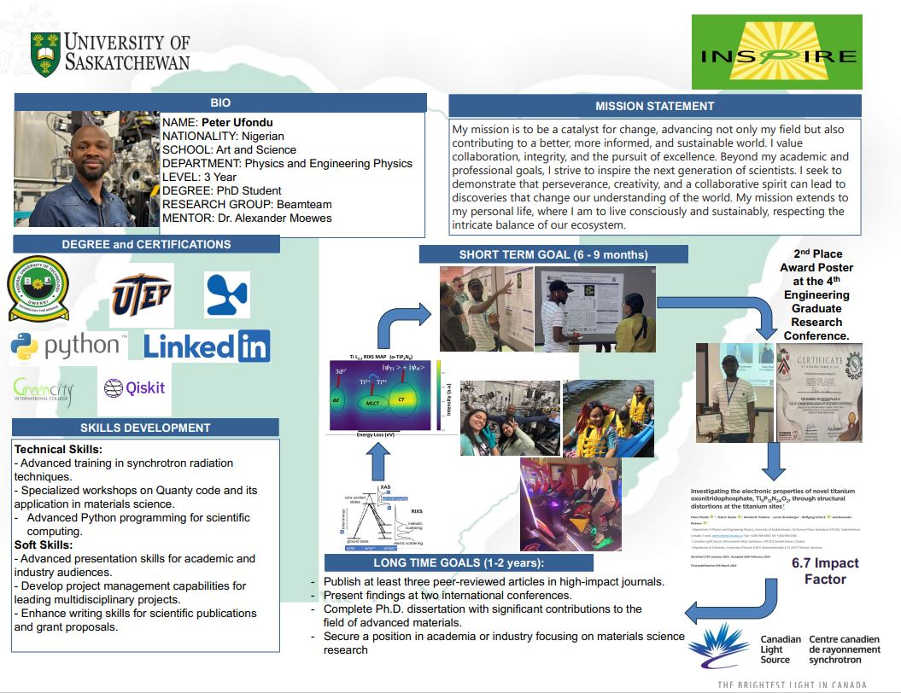
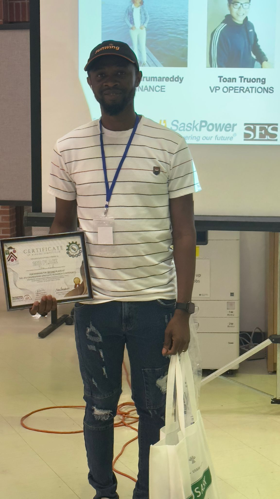
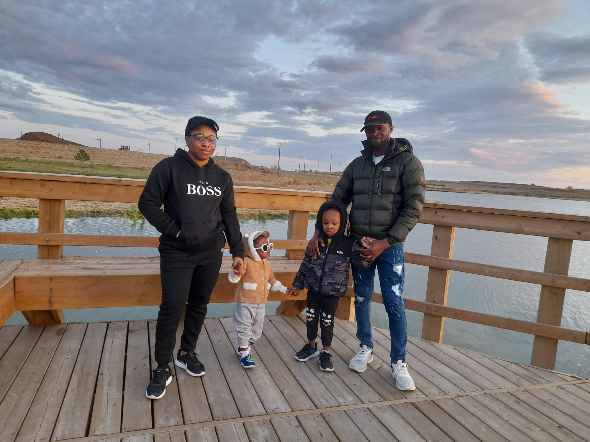
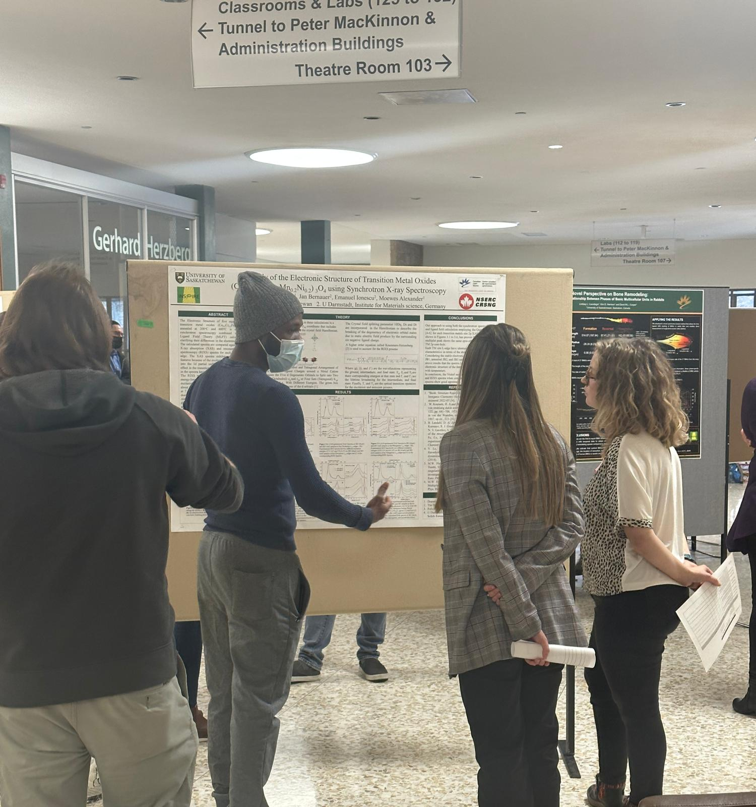

Welcome to my GPS 974 Portfolio
Welcome to my portfolio for GPS 974.
This website displays my objectives for the GPS courses, the learning artifacts I've created in pursuit of these goals, and the insights I've gained about myself throughout this course.









